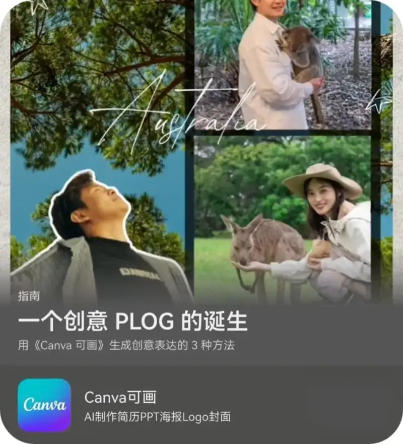
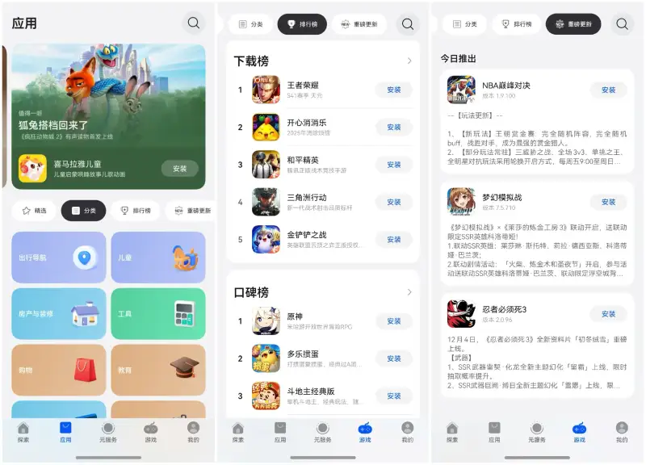

Night, a street corner, a cup of coffee, a trip. The shutters you press on the go may only be rough notes of daily life. Open the Huawei AppGallery and find the topic "The Birth of a Creative PLOG." It gives you 3 methods. It shows you how to use Canva to turn daily fragments into a creative Plog.

Use a multi-angle collage. With Canva's "AI cutout" feature, you can put yourself from different angles into one frame and create a surprising connection. Add a picture-in-picture. Take a base photo that includes your phone, then use AI to cut yourself out. Let the phone screen become a magic door, and let another smiling you peek out. When you have too many travel photos for an ordinary layout, use "spatial montage." Put a castle, a lighthouse, and a sunset into the same frame. The app also has a huge set of stickers and templates. You can piece together fragments from different times and places into one creative Plog.
AppGallery adds fresh content every day. It covers topics such as popular shows and exhibitions, travel guides, life solutions, and major game updates. When you find content you like, tap the Share button at the bottom of the Story page and send it to a friend in one tap to share the fun. On the Explore page, there are also many other topics, such as "The Joy of Perler Beads," "You Can Always Trust Small Animals," "Start Under the Pen, Soar Between the Stars," and "Best Apps and Games of the Month." They wait for you to explore.
To find apps, you can also explore the Apps or Games page. Tap Categories in the middle of the page to find more useful apps. Explore apps in the Rankings. Check the Download Rank for popularity and the Review Rank for ratings to find more hidden-gem apps. Through the Major Updates list, you can also follow the latest news on top apps, such as new core features and experience upgrades, and enjoy a better experience right away.

How to try it: Open AppGallery. On the Apps or Games page, tap Categories, Rankings, or Major Updates in the middle of the page.
Do not leave your photos in the album. Open Canva and start your creative journey. The best inspiration is the urge you feel right now to record something. Upgrade HarmonyOS 5 or above. Each day, browse the Explore page of the Huawei AppGallery to find more fresh ideas and solutions for daily life.